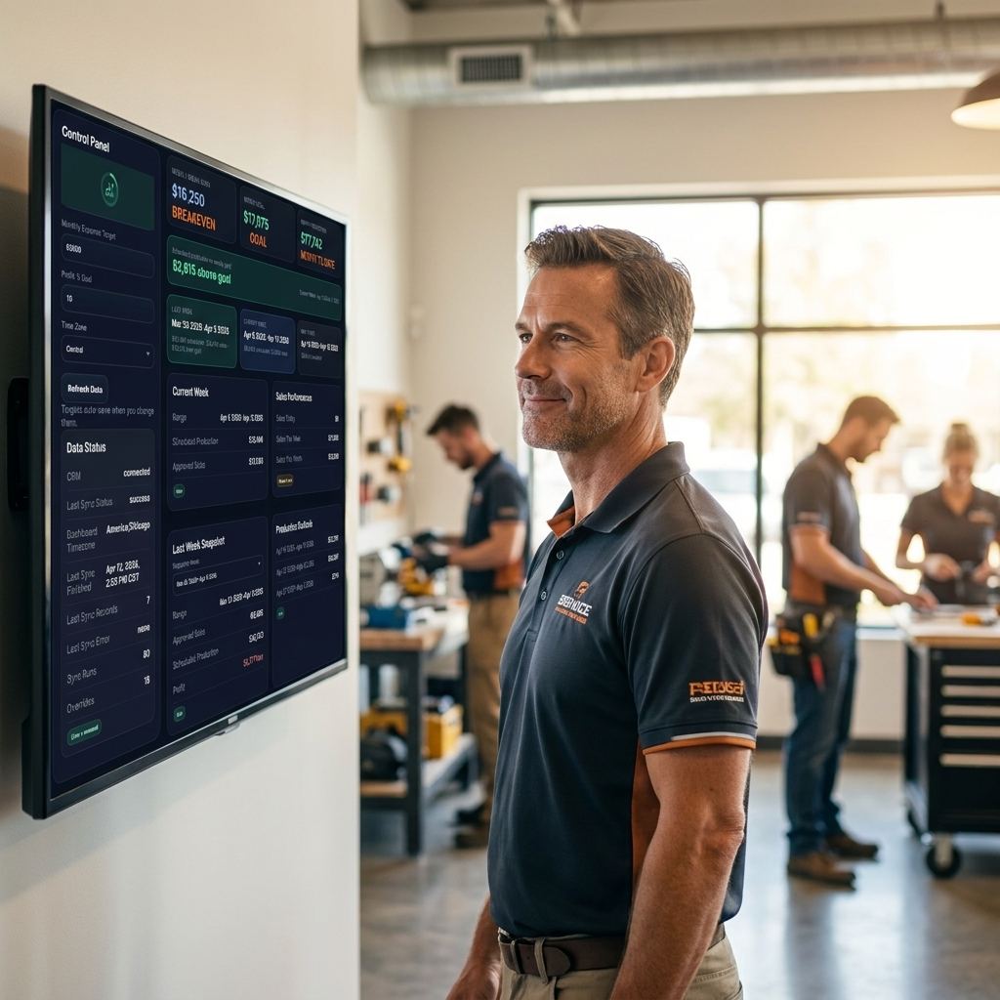

See if your service business is actually on pace to make money this month.
The Nut Report shows scheduled production, approved sales, target pace, and the next 3 weeks so you can see the gap before it becomes a cash problem.
Built for operators using Housecall Pro.
Jobber and ServiceTitan are next.

What owners usually do not know until it is too late

Then payroll gets close, approved sales are lighter than expected, and the real gap shows up too late to fix cleanly.
The schedule looks busy, but pace is weak, the next few weeks are soft, and the cash problem is already forming.
No one wants to find out on the last week that the team was behind all month and nobody saw it clearly.
Spreadsheets, CRM screens, and team updates do not give one operator view of booked, moving, and needed.
Who this is for, and who it is not for
Who this is for
- Service business owners doing enough revenue that missed pace actually hurts.
- Operators who need to know whether approved sales and scheduled production are really supporting the month.
- Teams that want one clear operating view instead of scattered screens.
What this is not
- Not accounting software.
- Not a bloated BI dashboard.
- Not a formal financial statement.
- A decision tool for operators who need to see the gap fast.

The 3 numbers that matter first
Scheduled production
See what is on the board this week so you can tell whether booked work is actually enough to support the month.
Approved sales
See whether sales are truly moving, not just sitting in a pipeline that makes the month look safer than it is.
Next 3 weeks
See the soft spots early so you can fix pace before payroll pressure or month-end surprise lands on you.
Current CRM support
Live now
Housecall Pro is the live connection today. Connect it, pull your numbers, and get the operator view fast.
In the works
Jobber and ServiceTitan are next, but the current v1 is built to get Housecall Pro shops live now.
Decision tool, not accounting software
Use it to spot the gap, coach from the numbers, and make faster operating decisions. Formal accounting still belongs in your accounting stack.